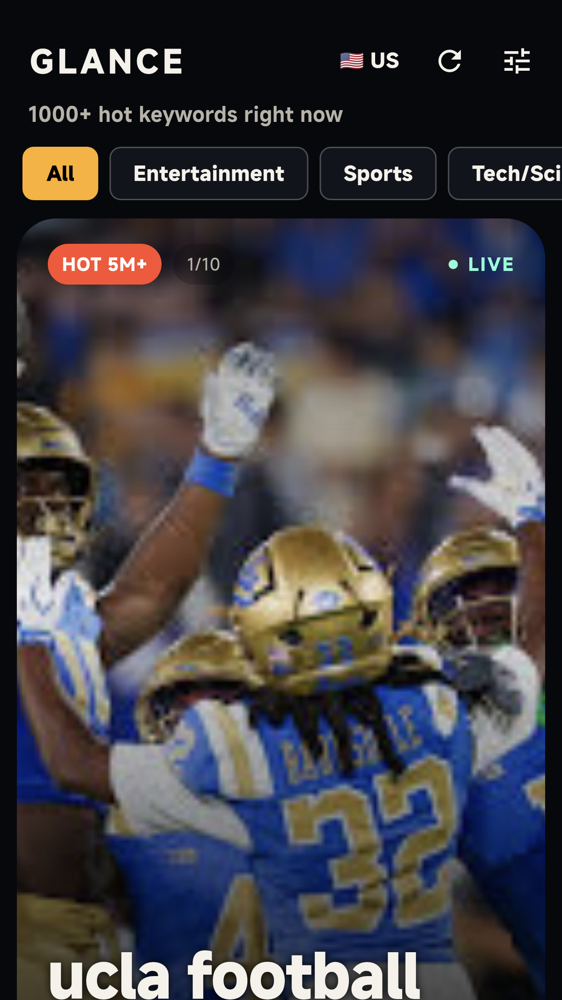
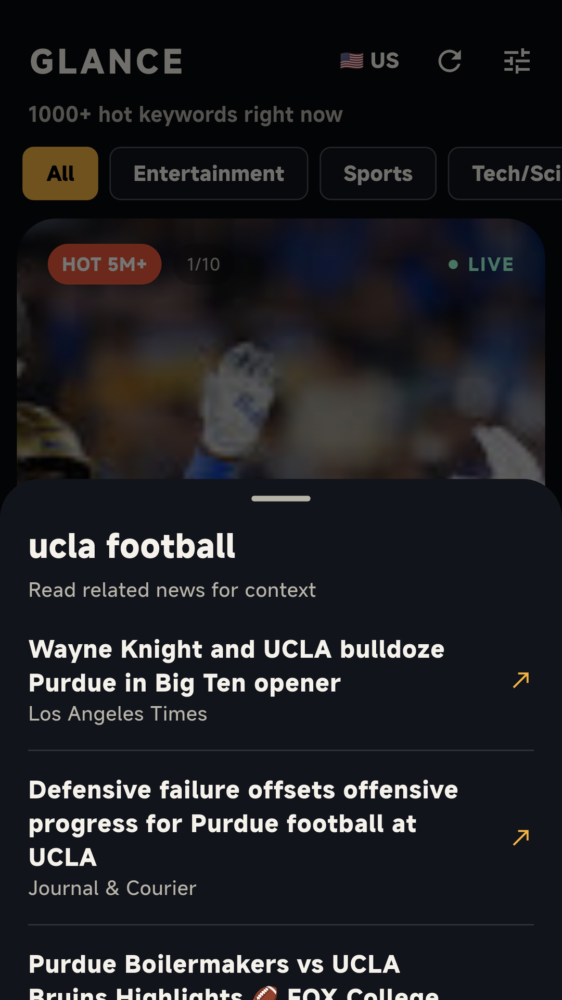
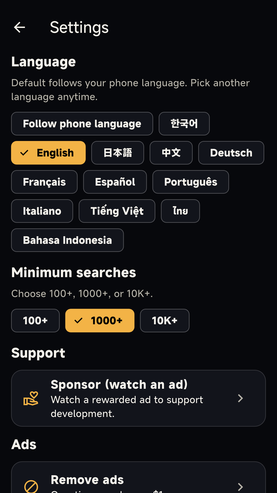

Apps / Glance
Hot keywords for AndroidGlance
See which searches are busy right now, country by country. Glance reads public Google Trends feeds on your phone. There is no Glance server. Now on Google Play.
Get it on Google PlayScreenshots



The app
Glance is a viewer for public Google Trends RSS feeds. It keeps keywords that clear the search floor you set, then lets you swipe them as large cards. A card can show a higher label, such as 5M+, when Google Trends reports that much traffic.
By country
Korea, the US, Japan, and more. The first country follows the phone. Change it whenever you want.
Search floor
Settings offers 100+, 1,000+, or 10,000+ minimum searches. The busier floor shows fewer keywords.
Tags
All, Entertainment, Sports, Tech/Science, and Business. The feed is a vertical stack of large cards.
Related headlines
Open a keyword to see news titles. A tap opens the article in the app. Those pages belong to the publishers.
Ads
A Google AdMob banner stays at the bottom and does not cover the cards. Settings has an optional support video. A one-time purchase removes the banner.
On the phone
Only the country and tag choices are stored on the device. There is no account. Internet is used for the feeds, the articles, and the ads.
Free on Google Play, with ads and a one-time in-app purchase. Rated Everyone. Google Play · Privacy policy